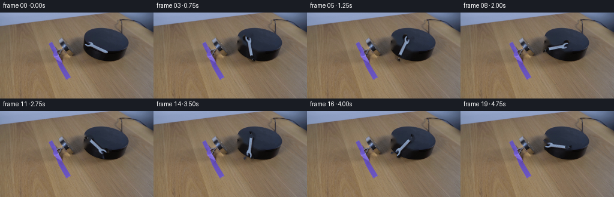
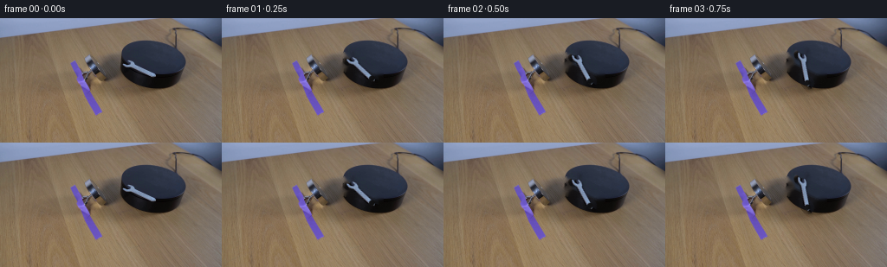

CODING AGENTS AS PIXEL WORLD MODELS
traex/GPT-5.6-Sol · 0100
点击播放 · 原生 RGB 像素
逐轮保存的候选
回放视频、检查图与代码变化。
每份候选均可单独播放。实际图片检查记录在下方工具轨迹中。
候选 01播放与检查图
点击播放 · 原生 RGB 像素


展开代码变化
--- 上一保存版本
+++ 本次保存版本
@@ -0,0 +1,100 @@
+"""Generate a locked-camera demonstration of a wrench turning on the platform."""
+from pathlib import Path
+
+import cv2
+import numpy as np
+from PIL import Image
+
+import artifact_io
+
+
+CASE_DIR = Path(__file__).resolve().parent
+
+
+def soft_wrench_support(h, w, center, angle_degrees):
+ """Analytic support of the wrench, supersampled for clean edges."""
+ scale = 4
+ hh, ww = h * scale, w * scale
+ yy, xx = np.mgrid[:hh, :ww].astype(np.float32)
+ cx, cy = center
+ x = xx / scale - cx
+ y = yy / scale - cy
+ a = np.deg2rad(angle_degrees)
+ # Local coordinates along/across the wrench.
+ u = np.cos(a) * x + np.sin(a) * y
+ v = -np.sin(a) * x + np.cos(a) * y
+
+ shaft = (u >= -14.5) & (u <= 14.0) & (np.abs(v) <= 4.1)
+ # Open-ended jaw. The notch removes the center of the outer end.
+ jaw_outer = (((u + 17.0) / 9.0) ** 2 + (v / 9.0) ** 2 <= 1.05) & (u < -10.0)
+ jaw_notch = (u < -17.0) & (np.abs(v) < (2.0 + (-u - 17.0) * 0.62))
+ jaw = jaw_outer & ~jaw_notch
+ # Ring end, including its opening.
+ rr = np.sqrt((u - 17.2) ** 2 + v**2)
+ ring = (rr <= 8.0) & (rr >= 3.4)
+ mask = (shaft | jaw | ring).astype(np.uint8) * 255
+ mask = cv2.resize(mask, (w, h), interpolation=cv2.INTER_AREA)
+ return mask.astype(np.float32) / 255.0
+
+
+def make_frames():
+ first = np.asarray(Image.open(CASE_DIR / "first_frame.png").convert("RGB"), dtype=np.uint8)
+ h, w = first.shape[:2]
+
+ # The object in the supplied photograph lies diagonally across the top of
+ # the black platform. Its local center and axis are measured directly in
+ # image coordinates. Everything else remains fixed.
+ center = (160.5, 58.0)
+ initial_angle = 25.0
+ support = soft_wrench_support(h, w, center, initial_angle)
+
+ # Construct a clean view of the platform beneath it. A generously dilated
+ # but tightly local support avoids disturbing the neighboring magnet.
+ removal = cv2.dilate((support > 0.025).astype(np.uint8), np.ones((5, 5), np.uint8), iterations=1)
+ bgr = first[:, :, ::-1]
+ clean = cv2.inpaint(bgr, removal * 255, 4.0, cv2.INPAINT_TELEA)[:, :, ::-1]
+
+ # Let measured disagreement with the reconstructed platform determine the
+ # cutout opacity. This retains highlights, steel-blue midtones, and dark
+ # edges, while not rotating a rectangular patch of the platform itself.
+ delta = np.sqrt(np.mean((first.astype(np.float32) - clean.astype(np.float32)) ** 2, axis=2))
+ evidence = np.clip((delta - 2.5) / 13.0, 0.0, 1.0)
+ evidence = cv2.morphologyEx(evidence, cv2.MORPH_CLOSE, np.ones((3, 3), np.uint8))
+ alpha0 = support * np.maximum(evidence, 0.18 * (support > 0.58))
+ alpha0 = cv2.GaussianBlur(alpha0, (0, 0), 0.42)
+ alpha0 = np.clip(alpha0, 0.0, 1.0)
+
+ # Premultiplication prevents dark/bright fringes while transforming.
+ premul = first.astype(np.float32) * alpha0[..., None]
+ frames = [first.copy()]
+ for i in range(1, 20):
+ # One nearly complete, steady clockwise turn in five seconds.
+ turn = 18.0 * i
+ matrix = cv2.getRotationMatrix2D(center, -turn, 1.0)
+ a = cv2.warpAffine(alpha0, matrix, (w, h), flags=cv2.INTER_CUBIC,
+ borderMode=cv2.BORDER_CONSTANT, borderValue=0)
+ a = np.clip(a, 0.0, 1.0)
+ obj = cv2.warpAffine(premul, matrix, (w, h), flags=cv2.INTER_CUBIC,
+ borderMode=cv2.BORDER_CONSTANT, borderValue=0)
+ obj = np.clip(obj, 0.0, 255.0)
+
+ # A faint, close contact shadow rotates with the wrench. The offset is
+ # small because the metal tool is resting directly on the platform.
+ sh_matrix = matrix.copy()
+ sh_matrix[:, 2] += (1.25, 1.55)
+ shadow = cv2.warpAffine(alpha0, sh_matrix, (w, h), flags=cv2.INTER_CUBIC,
+ borderMode=cv2.BORDER_CONSTANT, borderValue=0)
+ shadow = cv2.GaussianBlur(np.clip(shadow, 0, 1), (0, 0), 1.15) * 0.27
+
+ canvas = clean.astype(np.float32)
+ canvas *= (1.0 - shadow[..., None])
+ canvas = obj + canvas * (1.0 - a[..., None])
+ frames.append(np.clip(np.rint(canvas), 0, 255).astype(np.uint8))
+
+ return np.stack(frames, axis=0)
+
+
+if __name__ == "__main__":
+ video = make_frames()
+ assert video.shape == (20, 144, 256, 3) and video.dtype == np.uint8
+ artifact_io.save(video, CASE_DIR)
可观测工具轨迹
实际执行的命令与返回图片。
命令 1exit 0
/bin/bash -lc "cat GENERATION_RULES.md && printf '\\n---PROMPT---\\n' && cat prompt.txt"
命令 2exit 127
/bin/bash -lc "find . -maxdepth 2 -type f -printf '%p %s bytes\\n' | sort && file first_frame.png"
命令 3exit 0
/bin/bash -lc "python - <<'PY'
from PIL import Image
import numpy as np
im=np.array(Image.open('first_frame.png').convert('RGB'))
print(im.shape, im.min(), im.max())
# grid stats 16x9 mean + std
for y in range(0,144,16):
print('row',y)
for x in range(0,256,16):
a=im[y:y+16,x:x+16]; print('%3d,%3d,%3d/%2d'%(*a.mean((0,1)).round().astype(int),a.std()),end=' ')
print()
# most common quantized colors, location ranges
q=(im//16)*16
u,c=np.unique(q.reshape(-1,3),axis=0,return_counts=True)
for i in np.argsort(c)[-25:][::-1]:
col=u[i]; mask=np.all(q==col,2); ys,xs=np.where(mask)
print(c[i],col.tolist(),'x',xs.min(),xs.max(),'y',ys.min(),ys.max(),'meanxy',xs.mean().round(1),ys.mean().round(1))
PY"命令 4exit 0
/bin/bash -lc "python - <<'PY'
try:
import cv2; print('cv2',cv2.__version__)
except Exception as e: print(e)
PY
python - <<'PY'
from PIL import Image
import numpy as np
from sklearn.cluster import KMeans
im=np.array(Image.open('first_frame.png').convert('RGB'))
# features RGB + lightly weighted XY, cluster pixels
h,w=im.shape[:2]; Y,X=np.mgrid[:h,:w]
f=np.c_[im.reshape(-1,3), X.ravel()*.35,Y.ravel()*.35]
k=KMeans(14,random_state=4,n_init=10).fit(f)
lab=k.labels_.reshape(h,w); cen=k.cluster_centers_
for i,z in enumerate(cen):
ys,xs=np.where(lab==i); print(i,len(xs),'rgb',z[:3].round().astype(int),'xy',xs.mean().round(1),ys.mean().round(1),'bounds',xs.min(),xs.max(),ys.min(),ys.max())
# 4x4 modal labels, central relevant x64:224 y20:112
chars='0123456789ABCD'
for y in range(16,116,4):
s=''
for x in range(48,232,4):
a=lab[y:y+4,x:x+4].ravel(); s+=chars[np.bincount(a,minlength=14).argmax()]
print(f'{y:03}',s)
PY"命令 5exit 0
/bin/bash -lc "python - <<'PY'
from PIL import Image
import numpy as np, cv2
im=np.array(Image.open('first_frame.png').convert('RGB'))
# masks intervals by thresholds each row, central crop
for desc,m in [
('dark<55',im.mean(2)<55),('dark<80',im.mean(2)<80),('gray sat<18 v>55',(im.max(2)-im.min(2)<18)&(im.mean(2)>55)),('bright>150',im.mean(2)>150),('purple',(im[:,:,2]-im[:,:,0]>25)&(im[:,:,2]-im[:,:,1]>15))]:
print('\\n',desc)
for y in range(35,101,3):
xs=np.where(m[y]& (np.arange(256)>60)&(np.arange(256)<230))[0]
# contiguous runs >=2
runs=[]
for z in np.split(xs,np.where(np.diff(xs)>1)[0]+1):
if len(z)>=2:runs.append((z[0],z[-1]))
if runs: print(y,runs)
# grayscale and chroma values row every 2 x 90-215, represent categories
print('\\nASCII categories')
for y in range(38,90,2):
s=''
for x in range(78,220,2):
a=im[y:y+2,x:x+2].mean((0,1)); v=a.mean(); rg=a.max()-a.min()
if a[2]-max(a[0],a[1])>25: ch='P'
elif v<18: ch='#'
elif v<35: ch='@'
elif v<55: ch='D'
elif rg<14 and v>105: ch='W'
elif rg<16 and v>70: ch='g'
elif v<80:ch='d'
elif v<105:ch='-'
elif v<130:ch='.'
elif v<160:ch='+'
else: ch='*'
s+=ch
print(f'{y:03} {s}')
PY"命令 6exit 0
/bin/bash -lc "cat artifact_io.py | sed -n '1,240p'
python - <<'PY'
import cv2,numpy as np
from PIL import Image
im=cv2.imread('first_frame.png'); rgb=im[:,:,::-1]; gray=cv2.cvtColor(im,cv2.COLOR_BGR2GRAY)
for th in [30,45,60,75,90,105,120]:
m=(gray<th).astype(np.uint8)*255
n,L,st,cent=cv2.connectedComponentsWithStats(m)
print('\\nth',th)
for x,y,w,h,a in st[1:]:
if a>20:print(x,y,w,h,a)
# edge contours central, summarize contours area >20
ed=cv2.Canny(im,60,130)
cs,_=cv2.findContours(ed,cv2.RETR_LIST,cv2.CHAIN_APPROX_SIMPLE)
print('contours')
for c in sorted(cs,key=cv2.contourArea,reverse=True)[:40]:
x,y,w,h=cv2.boundingRect(c); a=cv2.contourArea(c)
print(round(a,1),(x,y,w,h),cv2.arcLength(c,True))
PY"命令 7exit 0
/bin/bash -lc "python - <<'PY'
from PIL import Image
import numpy as np
im=np.array(Image.open('first_frame.png').convert('RGB')); g=im.mean(2)
# mean over 2x2 quantized decimal: chars bins every 10 from 0-190
chars='0123456789ABCDEFGHIJ'
print('x coords:', ''.join(str((x//10)%10) for x in range(130,222,2)))
print(' ', ''.join(str(x%10//2) for x in range(130,222,2)))
for y in range(18,86,2):
s=''
for x in range(130,222,2):
v=g[y:y+2,x:x+2].mean(); s+=chars[min(19,int(v//10))]
print(f'{y:02}',s)
# HSV saturation classes only anomalies high brightness
PY"命令 8exit 0
/bin/bash -lc "python - <<'PY'
from PIL import Image
import numpy as np
im=np.array(Image.open('first_frame.png').convert('RGB'))
# dump per pixel 2x2 means RGB region around wrench
for y in range(44,72,2):
print('\\ny',y)
for x in range(138,184,2):
a=im[y:y+2,x:x+2].mean((0,1)).astype(int)
print(f'{x}:{a[0]:02x}{a[1]:02x}{a[2]:02x}',end=' ')
print()
PY"命令 9exit 0
/bin/bash -lc "cat > .tmp/test_seg.py <<'PY'
import cv2, numpy as np
from PIL import Image
im=np.array(Image.open('first_frame.png').convert('RGB'))
h,w=im.shape[:2]; Y,X=np.mgrid[:h,:w]
cx,cy=160.5,58.; a=np.deg2rad(25); co,si=np.cos(a),np.sin(a)
dx=X-cx;dy=Y-cy;u=co*dx+si*dy;v=-si*dx+co*dy
geom=((u>-22)&(u<22)&(np.abs(v)<5.0))|((u>-22)&(u<-12)&(np.abs(v)<9))|((u>13)&(u<22)&(np.abs(v)<7))
remove=cv2.dilate(geom.astype(np.uint8),np.ones((5,5),np.uint8),iterations=1)
bg=cv2.inpaint(im[:,:,::-1],remove*255,4,cv2.INPAINT_TELEA)[:,:,::-1]
d=np.sqrt(np.mean((im.astype(float)-bg.astype(float))**2,2))
for th in [5,8,10,12,15,20,30]:
m=geom&(d>th)
print('th',th,'n',m.sum(),'bounds',np.where(m)[1].min(),np.where(m)[1].max(),np.where(m)[0].min(),np.where(m)[0].max())
# coords ranges by y
for y in range(45,71,2):
xs=np.where(m[y])[0]
if len(xs): print(y,(xs.min(),xs.max(),len(xs)),end=';')
print()
# dump diff 2x blocks
for y in range(44,72,2):
print(y,''.join('0123456789ABCDEF'[min(15,int(d[y:y+2,x:x+2].mean()/8))] for x in range(136,186,2)))
Image.fromarray(bg).save('.tmp/bg.png');Image.fromarray((geom*255).astype(np.uint8)).save('.tmp/geom.png'); Image.fromarray(np.clip(d*4,0,255).astype(np.uint8)).save('.tmp/diff.png')
PY
python .tmp/test_seg.py"命令 10exit 0
/bin/bash -lc "cat > generate.py <<'PY'
\"\"\"Generate a locked-camera demonstration of a wrench turning on the platform.\"\"\"
from pathlib import Path
import cv2
import numpy as np
from PIL import Image
import artifact_io
CASE_DIR = Path(__file__).resolve().parent
def soft_wrench_support(h, w, center, angle_degrees):
\"\"\"Analytic support of the wrench, supersampled for clean edges.\"\"\"
scale = 4
hh, ww = h * scale, w * scale
yy, xx = np.mgrid[:hh, :ww].astype(np.float32)
cx, cy = center
x = xx / scale - cx
y = yy / scale - cy
a = np.deg2rad(angle_degrees)
# Local coordinates along/across the wrench.
u = np.cos(a) * x + np.sin(a) * y
v = -np.sin(a) * x + np.cos(a) * y
shaft = (u >= -14.5) & (u <= 14.0) & (np.abs(v) <= 4.1)
# Open-ended jaw. The notch removes the center of the outer end.
jaw_outer = (((u + 17.0) / 9.0) ** 2 + (v / 9.0) ** 2 <= 1.05) & (u < -10.0)
jaw_notch = (u < -17.0) & (np.abs(v) < (2.0 + (-u - 17.0) * 0.62))
jaw = jaw_outer & ~jaw_notch
# Ring end, including its opening.
rr = np.sqrt((u - 17.2) ** 2 + v**2)
ring = (rr <= 8.0) & (rr >= 3.4)
mask = (shaft | jaw | ring).astype(np.uint8) * 255
mask = cv2.resize(mask, (w, h), interpolation=cv2.INTER_AREA)
return mask.astype(np.float32) / 255.0
def make_frames():
first = np.asarray(Image.open(CASE_DIR / \"first_frame.png\").convert(\"RGB\"), dtype=np.uint8)
h, w = first.shape[:2]
# The object in the supplied photograph lies diagonally across the top of
# the black platform. Its local center and axis are measured directly in
# image coordinates. Everything else remains fixed.
center = (160.5, 58.0)
initial_angle = 25.0
support = soft_wrench_support(h, w, center, initial_angle)
# Construct a clean view of the platform beneath it. A generously dilated
# but tightly local support avoids disturbing the neighboring magnet.
removal = cv2.dilate((support > 0.025).astype(np.uint8), np.ones((5, 5), np.uint8), iterations=1)
bgr = first[:, :, ::-1]
clean = cv2.inpaint(bgr, removal * 255, 4.0, cv2.INPAINT_TELEA)[:, :, ::-1]
# Let measured disagreement with the reconstructed platform determine the
# cutout opacity. This retains highlights, steel-blue midtones, and dark
# edges, while not rotating a rectangular patch of the platform itself.
delta = np.sqrt(np.mean((first.astype(np.float32) - clean.astype(np.float32)) ** 2, axis=2))
evidence = np.clip((delta - 2.5) / 13.0, 0.0, 1.0)
evidence = cv2.morphologyEx(evidence, cv2.MORPH_CLOSE, np.ones((3, 3), np.uint8))
alpha0 = support * np.maximum(evidence, 0.18 * (support > 0.58))
alpha0 = cv2.GaussianBlur(alpha0, (0, 0), 0.42)
alpha0 = np.clip(alpha0, 0.0, 1.0)
# Premultiplication prevents dark/bright fringes while transforming.
premul = first.astype(np.float32) * alpha0[..., None]
frames = [first.copy()]
for i in range(1, 20):
# One nearly complete, steady clockwise turn in five seconds.
turn = 18.0 * i
matrix = cv2.getRotationMatrix2D(center, -turn, 1.0)
a = cv2.warpAffine(alpha0, matrix, (w, h), flags=cv2.INTER_CUBIC,
borderMode=cv2.BORDER_CONSTANT, borderValue=0)
a = np.clip(a, 0.0, 1.0)
obj = cv2.warpAffine(premul, matrix, (w, h), flags=cv2.INTER_CUBIC,
borderMode=cv2.BORDER_CONSTANT, borderValue=0)
obj = np.clip(obj, 0.0, 255.0)
# A faint, close contact shadow rotates with the wrench. The offset is
# small because the metal tool is resting directly on the platform.
sh_matrix = matrix.copy()
sh_matrix[:, 2] += (1.25, 1.55)
shadow = cv2.warpAffine(alpha0, sh_matrix, (w, h), flags=cv2.INTER_CUBIC,
borderMode=cv2.BORDER_CONSTANT, borderValue=0)
shadow = cv2.GaussianBlur(np.clip(shadow, 0, 1), (0, 0), 1.15) * 0.27
canvas = clean.astype(np.float32)
canvas *= (1.0 - shadow[..., None])
canvas = obj + canvas * (1.0 - a[..., None])
frames.append(np.clip(np.rint(canvas), 0, 255).astype(np.uint8))
return np.stack(frames, axis=0)
if __name__ == \"__main__\":
video = make_frames()
assert video.shape == (20, 144, 256, 3) and video.dtype == np.uint8
artifact_io.save(video, CASE_DIR)
PY
python generate.py
python - <<'PY'
import numpy as np
from PIL import Image
z=np.load('pixels.npz')['pixels']
f=np.array(Image.open('first_frame.png').convert('RGB')); p=((f[:,:,0].astype('u4')<<16)|(f[:,:,1].astype('u4')<<8)|f[:,:,2]).astype('u4')
print('pixels',z.shape,z.dtype,'frame0 exact',np.array_equal(z[:,:,0],p))
for i in range(1,20):
a=np.array(Image.open(f'frames/{i:02d}.png')); b=np.array(Image.open(f'frames/{i-1:02d}.png'))
d=np.abs(a.astype(int)-b.astype(int)); m=np.any(d,2)
ys,xs=np.where(m); print(i,m.sum(),round(d.mean(),3),(xs.min(),xs.max(),ys.min(),ys.max()))
PY"保存候选 1 份；完成命令 10 次；可验证图片返回 0 张。原始 API 响应与完整日志保留在本地。